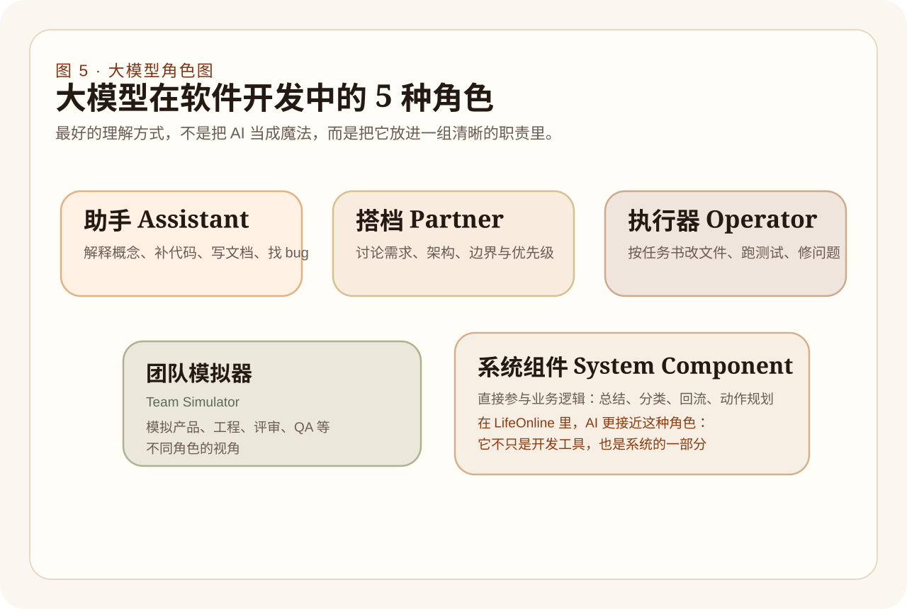

初生牛犊向导（Assistant，知识提读助手）
专门帮你跨过陌生生僻小众晦涩语法库以及快速帮你从十万页冗余手册里检索抽提精准概念概念盲区解释以及随手编写特定的小片断工具正则算法代码块以及在迷惘无果面对屏幕深坑 BUG 崩溃红字栈时帮你翻译和指出方向错误。
对大模型的神性祛魅！把那看似“一言不合就能写出天衣无缝几万行核心代码”的万能魔法拉回现实尘埃，重投射到严谨枯燥切实的责任角色制度系统网络中加以理性安置把控治理分派使用上头。
在大模型如同狂浪席卷技术圈引发剧烈动荡不安而让多数新手处于无脑顶礼膜拜之至时，我们必须先破除最容易犯下的“毒药式”的错乱理解，那就是绝大部分人都无端寄希望且潜意识假想它是：“那个只要你抛出一句粗糙如沙子的产品简便抱怨废话它就可以毫无延迟反手甩脸给你一套运行十年都零崩溃免维护魔法黑箱应用的印钞机终结机器”。绝不是这样的！
它的最强本源深层次强悍，永远聚集在其不可思议但又确切存在上限边界的领域：深不可测海量模糊语言理解消解转化、从巨大杂音沙包里组织凝聚语意模型、生成粗面胚结构树、填充套路样板结构骨络网乃至陪你开展高概率逻辑回声测试的极高等次推理协理辅助。但一旦失去界限制约，它将是一个产生出海量不加约束冗余赘疣致死代码块与严重乱联乱改架构系统主干道命脉的“最勤奋代码摧毁者”。
专门帮你跨过陌生生僻小众晦涩语法库以及快速帮你从十万页冗余手册里检索抽提精准概念概念盲区解释以及随手编写特定的小片断工具正则算法代码块以及在迷惘无果面对屏幕深坑 BUG 崩溃红字栈时帮你翻译和指出方向错误。
一起探讨那些宏大悬而未决边界、拆破系统漏洞逻辑怪圈、推敲探讨和推演业务在深水区中如果按照这般演替最终可能出现的各种资源消耗或者安全陷阱死角边界等关键优先级梳理把关的探讨辩驳。
把那种极其无聊而且有着极大数量以及刻板复制枯燥特性的重复体力劳动推派给它，诸如去修改批量散布文件字段表头命名规则和根据你定下的严苛基准要求去生成大堆模板配置表列等任务执行。只要给出了极严格清晰死命令与极速自动化复查红线它就有恐怖战力！
能够在极端缺少测试受众时强力模拟一个刁钻又无比挑剔甚至思维带有明显非线性不可预知偏好风格特质的用户甚至一个吹毛求疵极端尖刻挑拨的项目发版把关代码评审大员或者 QA 并用放大镜去拷问系统极限弱点与漏洞崩溃口。
它是已经脱离只在程序员本地编辑面板充当“外设”这个狭隘视角层级而彻底沉锚到系统的生命大动脉骨干循环网中变成极其核心的高端信息处理判断阀门！负责分析接收到最原始脑暴混沌高熵用户原始念头意图甚至亲自做归结提分类从而最终提炼抛撒生成回流的动作序列。
这正是 LifeOnline 这部重度人机联构超星系联合感知体最能够大放异彩且极度典型的极特殊深远前线意义价值标本点。
在 LifeOnline 前线与底层暗房之内绝多数隐形流转战线阶段里，“大模型不仅是一名单纯陪伴打打杂或者修改个边角的辅助写稿机开发助手工具”。它已经与代码网络深深融成生命连理网络共同体。因此很多过去陈腐和旧时代停滞的“这道破题只在于该教我写怎样讨巧提示语句的术法讨论降维度攻击把戏思维”统统被逼向上层升华进阶为必须被极严密沉重推演考量的深端疑问系统盘剥诘问——也就是：在复杂联合网眼中我等“到底应该去怎么设计设立阈限治理隔离层机制应对 AI 极可能发生的暴走决策输出与灾变改动”、到底系统怎么对它形成高度全面多侧切位状态的透传监测踪迹追溯大盘从而使得一旦灾难反馈能够立即重归纠偏调整等连续机制和引擎建设层面课题中来探讨其根本使用法则。
想要在时代巨变浪潮顶端上用好巨型语言大模型这一极其震撼同时又具有潜在极具狂暴毁坏力的高危生产巨无霸杠杆武器，首要法门是将它果断精准置入极其清晰极不越界的高压规则管辖角色系统笼架中。在其中明确规定在哪些业务段只允许让其提出建言以及在何种业务层和管控网网孔边界外可以允许任其粗暴放行直接产生落地位数据更改操作和强硬必须得到人工复查截留治理权限。
